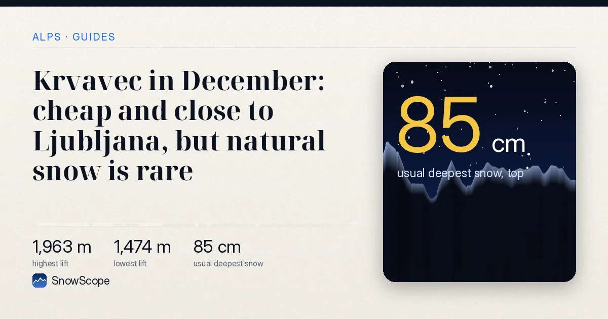

Krvavec in December: cheap and close to Ljubljana, but natural snow is rare
Krvavec is the ski hill people in Ljubljana can reach before breakfast, and its prices are among the lowest in this series: EUR 47 for an adult day and EUR 205 for 6 days. The snow history is the hard part. On a typical 15 December mid-mountain (1718 m) has 13 cm in our 46 winters, and in 11 of those winters the ground was bare that day.
See the live snow forecast for Krvavec in the SnowScope appSnow depth, powder alerts and the 3D map, free.
What people say about December here
The common view is that Krvavec, with lifts up to 1963 m, is high enough for an early start. It is high for Slovenia, and the mapped area is decent: 16 km of runs and 13 lifts. But snow that falls is not snow that stays, and on this sunny southern edge of the Alps December often loses what November brought.


What 46 winters actually show
In the week of 15-21 December only 24 % of our winters had 30 cm or more at mid-mountain, and 28 % at the top. In Christmas week the shares are 28 % and 33 %. The usual first day with 30 cm at mid-mountain is 7 January.
Worse, the trend is steep. The December average at mid-mountain fell from 15 cm in the first 15 winters to 4 cm in the last 15. In Christmas week, 47 % of the early winters had 30 cm there, against 13 % of the recent ones. Last winter had no natural snow at all on 15 December.
The cheap part
On the official 2026-27 price list an adult day pass costs EUR 47 and a 6-day pass EUR 205, with a lower presale day price of EUR 45. That is far below the Austrian glaciers. If the pistes are prepared, a December day here is very good value; the snow history simply says that in many winters natural snow will not do that job alone in December.
Where the Mölltaler Gletscher fits
For a sure December week, the nearest high option on our list is the Mölltaler Gletscher in Carinthia: 66 cm at its 2103 m bottom lift on a typical 15 December and 91 % of winters with 30 cm in the week of 15-21 December. It costs more: EUR 332 for 6 days in the low season on its latest published list (2025-26).
A sensible plan for skiers based in Slovenia: Krvavec for short days when its own snow report is good, the glacier for a planned week.
Small print
Our numbers describe natural snow on the ground at the resort's heights; they say nothing about what the resort prepares on its runs. Before you buy a December pass here, look at the resort's own live snow and piste report, and treat a booking made months ahead as a gamble.
Tips for skiers
- Check the resort's piste report on the day: natural snow alone covered mid-mountain with 30 cm in only 24 % of our winters by mid-December.
- Buy day by day rather than a 6-day pass for December, unless the report shows a good base.
- For a fixed pre-Christmas week, look higher: the Mölltaler Gletscher is the snow-sure option nearby.
- Off-piste after a rare storm: read the Slovenian avalanche bulletin first.
More maps (external sites)
References and credits
- Krvavec: official lift-pass prices (2026-27), checked 13 November 2026 rtc-krvavec.si/cenik-urnik
- Mölltaler Gletscher: official lift-pass prices (2025-26), checked 13 November 2026 www.moelltaler-gletscher.at/en/price-list/winter/moelltaler-gletscher
About these numbers
Snow numbers: SnowScope snow history, 46 past winters (1980-81 to 2025-26) at the resort's heights, corrected for height (an estimate for an area, not resort reports); 'good snow' = 30 cm or more on the ground as the week's average. Map: our typical depth on 15 December spread over the terrain by height. Runs and lifts: OpenSkiMap mapping. Lift-pass prices: the resorts' official price lists, checked on 13 November 2026; prices can change.
Official avalanche bulletins: ARSO – Slovenian Environment Agency
Cite this report
For research, teaching or the press: the numbers and charts are free to reuse under CC BY 4.0 with this citation.
SnowScope (2026), Krvavec in December: cheap and close to Ljubljana, but natural snow is rare, https://snowscope.app/blog/en/2026/11/krvavec-december-skiing-ljubljana-honest-snow.html, accessed 2026-11-14
SnowScope (Atlas Labs). (2026, November 14). Krvavec in December: cheap and close to Ljubljana, but natural snow is rare. SnowScope snow reports. https://snowscope.app/blog/en/2026/11/krvavec-december-skiing-ljubljana-honest-snow.html
BibTeX
@misc{snowscope2026krvavecdecemberskiinglju,
author = {{SnowScope (Atlas Labs)}},
title = {Krvavec in December: cheap and close to Ljubljana, but natural snow is rare},
year = {2026},
month = nov,
howpublished = {\url{https://snowscope.app/blog/en/2026/11/krvavec-december-skiing-ljubljana-honest-snow.html}},
note = {Published 2026-11-14 20:54 UTC; accessed 2026-11-14}
}· CC BY 4.0 · Methods, data and tools →
Krvavec: snow and temperature by height, this winter vs last (tools) →
Follow Krvavec
Free: a message when fresh snow is coming, and the forecast every morning.
More snow reports

A cheap 3-day Lake Como plan for December with real 2026-27 prices: trains, ferries, a funicular and a ski day at Piani di Bobbio or Madesimo, what you save compared with Cortina, and the chance of snow at Christmas.

Bonneval-sur-Arc shows 52 cm upper slopes on 8 November. Weeks 10-11 are peak snow months. See what to pack for the forecast.

Alpine snow depths are running behind normal for early November, with only 55 cm at the best resorts as of November 3rd.